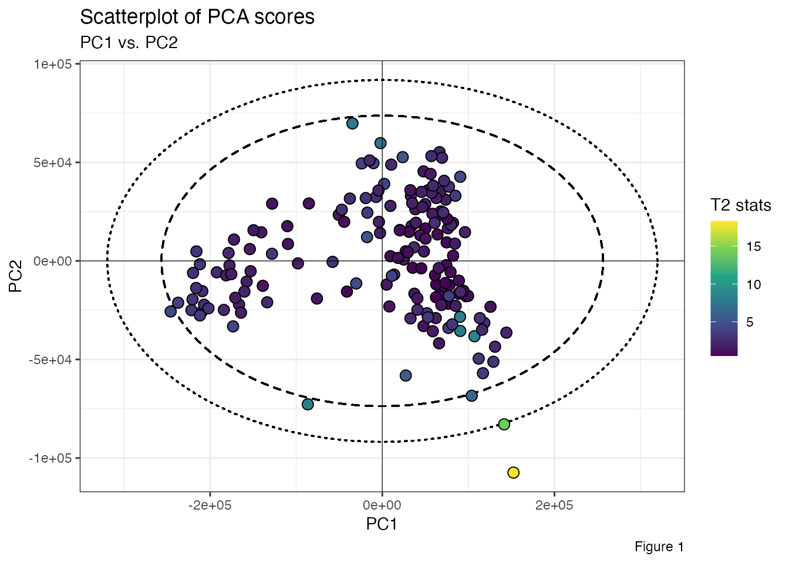
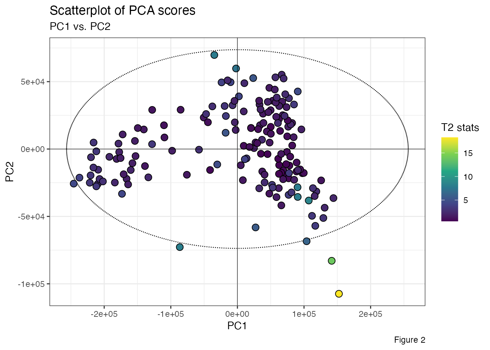
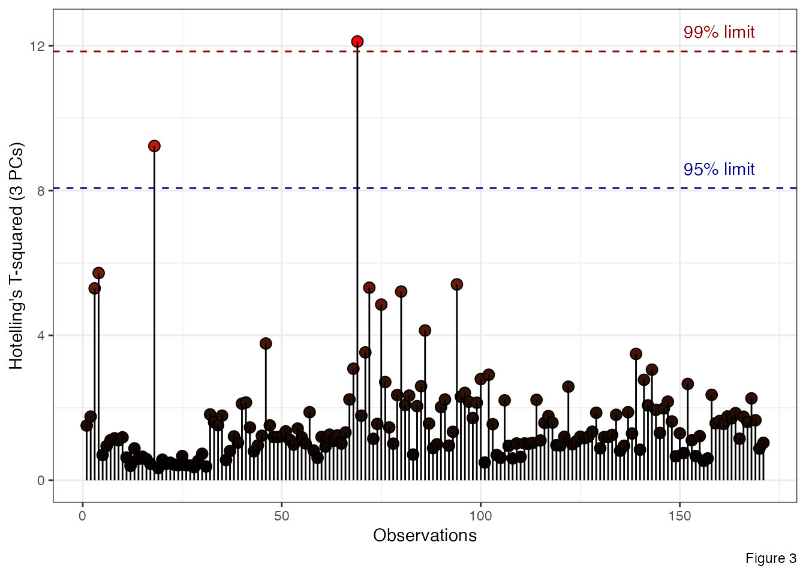

HotellingEllipse package computes the Hotelling’s T-squared statistic. For bivariate data, it provides x-y coordinates and the principal axes (denoted a and b) for drawing confidence ellipse based on Hotelling’s T-squared. Specifically, there are two functions available:
ellipseParam(), computes the Hotelling’s T-squared statistic and the principal axes of the confidence ellipse at 99% and 95% confidence interval.ellipseCoord(), computes the x and y coordinate points of the confidence ellipse. The confidence interval is set at 95% by default.As an example, we use FactoMineR::PCA() to perform the Principal Component Analysis (PCA) from a LIBS spectral dataset and extract the PCA scores.
data("specData")
set.seed(123)
pca_mod <- specData %>%
select(where(is.numeric)) %>%
FactoMineR::PCA(scale.unit = FALSE, graph = FALSE)Then, using the function ellipseParam() we calculate the Hotelling’s T\(^2\) statistic for the first two principal components.
res <- ellipseParam(data = pca_scores, k = 2, pcx = 1, pcy = 2)We can extract parameters for further use:
Principal axes of the ellipse at 99% confidence level.
Principal axes of the ellipse at 95% confidence level.
Hotelling’s T\(^2\) statistic (for the first two PCs).
Tsq <- pluck(res, "Tsquared", "statistic")Using ggplot2::ggplot() and ggforce::geom_ellipse() we plot the scatterplot of PCA scores and the corresponding Hotelling’s T\(^2\) ellipses at 99% and 95% confidence levels.
pca_scores %>%
ggplot(aes(x = Dim.1, y = Dim.2)) +
ggforce::geom_ellipse(aes(x0 = 0, y0 = 0, a = a1, b = b1, angle = 0), size = .5, linetype = "dotted") +
ggforce::geom_ellipse(aes(x0 = 0, y0 = 0, a = a2, b = b2, angle = 0), size = .5, linetype = "dashed") +
geom_point(aes(fill = Tsq), shape = 21, size = 3, color = "black") +
scale_fill_viridis_c(option = "viridis") +
geom_hline(yintercept = 0, linetype = "solid", color = "black", size = .2) +
geom_vline(xintercept = 0, linetype = "solid", color = "black", size = .2) +
labs(title = "Scatterplot of PCA scores", subtitle = "PC1 vs. PC2", x = "PC1", y = "PC2", fill = "T2 stats", caption = "Figure 1") +
theme_bw()
Another way is to run the function ellipseCoord(), if you want the x and y coordinate points of the confidence ellipse.
xy_coord <- ellipseCoord(data = pca_scores, pcx = 1, pcy = 2, conf.limit = 0.95, pts = 500)Then plot the confidence ellipse, using ggforce::geom_ellipse.
ggplot() +
ggforce::geom_ellipse(data = xy_coord, aes(x0 = x, y0 = y, a = 1, b = 1, angle = 0), size = .5, linetype = "dashed") +
geom_point(data = pca_scores, aes(x = Dim.1, y = Dim.2, fill = Tsq), shape = 21, size = 3, color = "black") +
scale_fill_viridis_c(option = "viridis") +
geom_hline(yintercept = 0, linetype = "solid", color = "black", size = .2) +
geom_vline(xintercept = 0, linetype = "solid", color = "black", size = .2) +
labs(title = "Scatterplot of PCA scores", subtitle = "PC1 vs. PC2", x = "PC1", y = "PC2", fill = "T2 stats", caption = "Figure 2") +
theme_bw()
For more than two principal components, the easiest way is to plot Observations vs. Hotelling’s T\(^2\) where the confidence limits are plotted as a line. For example, below, ellipseParam() is ran with the first three principal components.
res1 <- ellipseParam(data = pca_scores, k = 3)
tibble::tibble(
Tsq = pluck(res1, "Tsquared", "statistic"),
obs = 1:nrow(pca_scores)
) %>%
ggplot() +
geom_point(aes(x = obs, y = Tsq, fill = Tsq), shape = 21, size = 3, color = "black") +
geom_segment(aes(x = obs, y = Tsq, xend = obs, yend = 0), size = .5) +
scale_fill_gradient(low = "black", high = "red", guide = "none") +
geom_hline(yintercept = limit1, linetype = "dashed", color = "darkred", size = .5) +
geom_hline(yintercept = limit2, linetype = "dashed", color = "darkblue", size = .5) +
annotate("text", x = 160, y = 12.4, label = "99% limit", color = "darkred") +
annotate("text", x = 160, y = 8.6, label = "95% limit", color = "darkblue") +
labs(x = "Observations", y = "Hotelling's T-squared (3 PCs)", fill = "T2 stats", caption = "Figure 3") +
theme_bw()